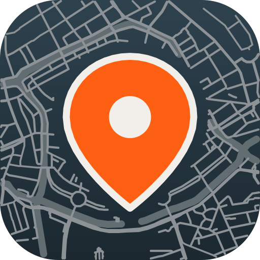

Call · # ebbinge-quarter · in the courtyard, Ebbingekwartier · 24:10 · encrypted
Grid
Room
Sanne · talking
Joris
Daan
Fatima
Mei
side conversation · you hear them faintly
You · WASD to walk, drag to look
Calls are the app's encrypted calls (Opus, VP9, sealed with the chat's keys, forwarded by the simulator, which cannot open them). The web UI adds nothing to the security, only to the shape: a call can be the usual grid of faces, or it can take place in the channel's place, and whoever knows the site can walk everyone through it.

By distance, people further away are quieter, so a group can split off and come back without starting a second call. Turn it off and it is an ordinary call.
Mei and I are checking the bin store, back in 5